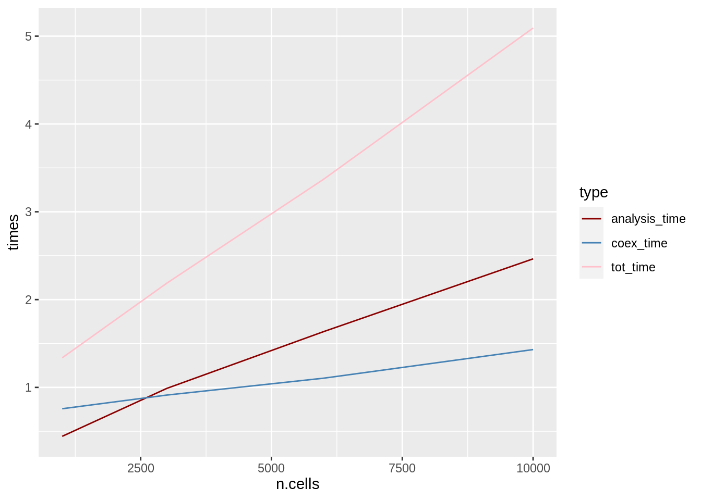

The following data and plot analyse the execution time of COTAN tool using the automatic.COTAN.object.creation function.
ggplot(tot.file, aes(x = n.cells, y = times)) +
geom_line(aes(color = type)) +
scale_color_manual(values = c("darkred", "steelblue","pink"))
The scale for times are minutes.
print(sessionInfo())
#> R version 4.0.4 (2021-02-15)
#> Platform: x86_64-pc-linux-gnu (64-bit)
#> Running under: Ubuntu 18.04.5 LTS
#>
#> Matrix products: default
#> BLAS: /usr/lib/x86_64-linux-gnu/openblas/libblas.so.3
#> LAPACK: /usr/lib/x86_64-linux-gnu/libopenblasp-r0.2.20.so
#>
#> locale:
#> [1] LC_CTYPE=en_US.UTF-8 LC_NUMERIC=C
#> [3] LC_TIME=en_US.UTF-8 LC_COLLATE=en_US.UTF-8
#> [5] LC_MONETARY=en_US.UTF-8 LC_MESSAGES=en_US.UTF-8
#> [7] LC_PAPER=en_US.UTF-8 LC_NAME=C
#> [9] LC_ADDRESS=C LC_TELEPHONE=C
#> [11] LC_MEASUREMENT=en_US.UTF-8 LC_IDENTIFICATION=C
#>
#> attached base packages:
#> [1] stats graphics grDevices utils datasets methods base
#>
#> other attached packages:
#> [1] ggplot2_3.3.3
#>
#> loaded via a namespace (and not attached):
#> [1] highr_0.8 bslib_0.2.4 compiler_4.0.4 pillar_1.5.1
#> [5] jquerylib_0.1.3 tools_4.0.4 digest_0.6.27 jsonlite_1.7.2
#> [9] evaluate_0.14 lifecycle_1.0.0 tibble_3.1.0 gtable_0.3.0
#> [13] pkgconfig_2.0.3 rlang_0.4.10 DBI_1.1.1 yaml_2.2.1
#> [17] xfun_0.22 withr_2.4.1 stringr_1.4.0 dplyr_1.0.4
#> [21] knitr_1.31 generics_0.1.0 sass_0.3.1 vctrs_0.3.6
#> [25] grid_4.0.4 tidyselect_1.1.0 glue_1.4.2 R6_2.5.0
#> [29] fansi_0.4.2 rmarkdown_2.7 farver_2.1.0 purrr_0.3.4
#> [33] magrittr_2.0.1 scales_1.1.1 ellipsis_0.3.1 htmltools_0.5.1.1
#> [37] assertthat_0.2.1 colorspace_2.0-0 labeling_0.4.2 utf8_1.2.1
#> [41] stringi_1.5.3 munsell_0.5.0 crayon_1.4.0